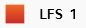
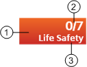
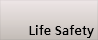
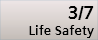
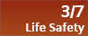

Event Lamps
The events that occur in the building automation and control system are grouped into categories, which are color-coded by severity. Each alarm category typically corresponds to an event lamp that displays in the Summary bar. The number of lamps and their corresponding categories depends on profiles.
Each event lamp shows the total number of events for that category, and how many of those are unprocessed (not yet acknowledged by the operator). An event lamp will also flash if there are any unprocessed events in its category.
When the Summary bar is collapsed to a slim bar, event information appears in a reduced format (event category abbreviation and the total number of alarms for that category), including also icons for any event timers or applied filters.


Event Information | ||
| Name | Description |
1 | Background color | Indicates the category color of the event. |
2 | Event counter | Shows the total number of alarms for that category present in Event List (second number), and how many of those are unprocessed (first number). |
3 | Event category | Descriptive name of the category. |
Event Lamp Display | ||
Graphical Display | Background Color and Behavior | Status |
 | Solid gray. | No events for that category. |
|
|
|
 | Flashes from gray to the category color. | New events for that category have occurred in the system, and are still unprocessed. |
|
|
|
 | Flashes from gray to the dark category color. | Filter by category activated. New events for that category have occurred in the system, and are still unprocessed. |
|
|
|
Solid category color and not flashing. | There are no unprocessed events for that category. | |
|
|
|
Solid dark category color and not flashing. | Filter by category activated. There are no unprocessed events for that category. | |
When you move the cursor over an event lamp, a tooltip provides the following information:
- Total number of events for this category
- Number of unprocessed (unacknowledged) events for this category
- Number of events for this category that have been acknowledged